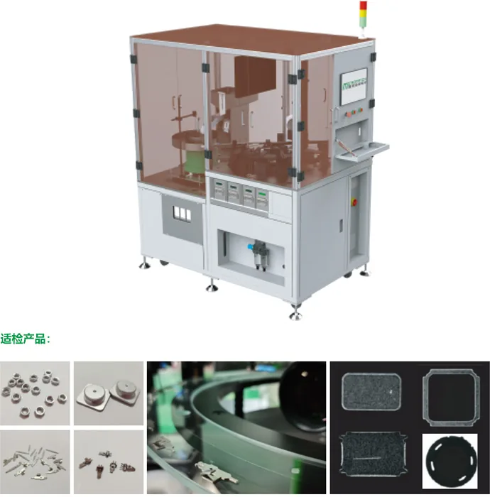
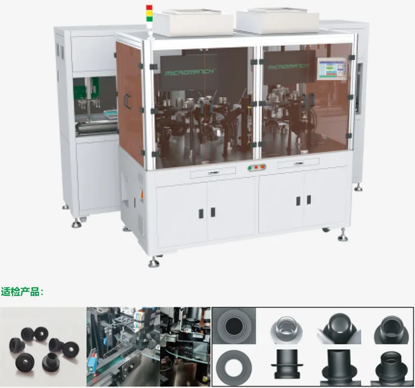
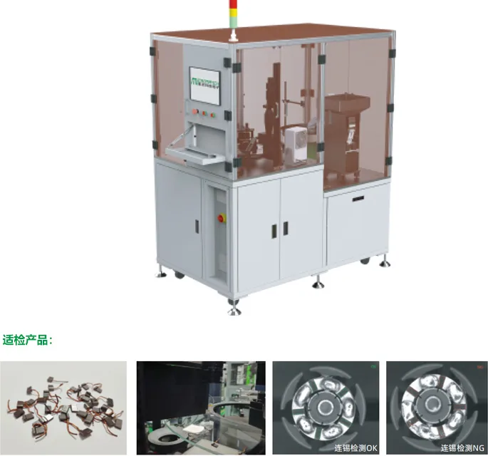
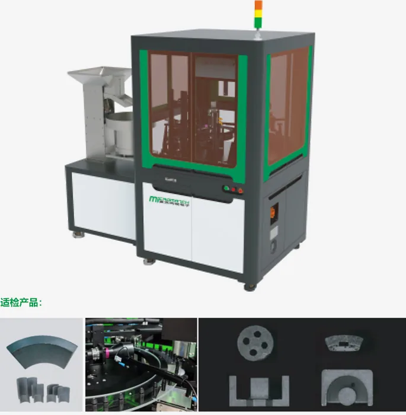
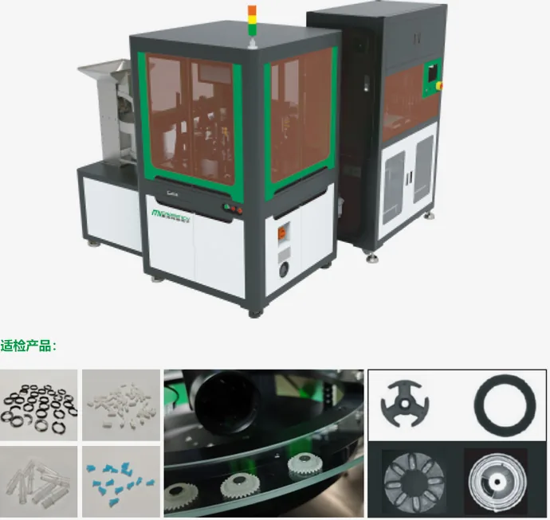

Mesin pengasingan visi

Mic- SXT
Peralatan pemeriksaan visi modul kamera• Pemeriksaan pintar semua dimensi: Menyaring kecacatan rupa luar produk dan mengukur dimensi berketepatan tinggi secara automatik sepenuhnya tanpa campur tangan manusia, dengan kecekapan dan konsistensi pemeriksaan yang cemerlang.
• Serasi secara fleksibel dengan pelbagai kategori: Satu peralatan menyokong pemeriksaan pelbagai produk tanpa perlu menukar jig dengan kerap, sekali gus mengurangkan kos pertukaran barisan pengeluaran dengan ketara dan memenuhi keperluan pengeluaran berbilang kelompok serta kelompok kecil.• Pemeriksaan 360° dengan cakupan multi-sudut: Menggunakan teknologi transmisi roda segerak untuk imbasan menyeluruh dengan liputan pelbagai sudut pada dinding dalaman dan luaran produk, mengenal pasti kecacatan kecil dengan tepat dan membantu mengurangkan pemeriksaan terlepas.• Kelajuan tinggi dan ketepatan tinggi: Kelajuan pemeriksaan setinggi 60 unit / minit untuk kapasiti pengeluaran yang cekap; ketepatan pemeriksaan boleh mencapai 0,0007 mm bagi memenuhi piawaian ketat pembuatan ultra berketepatan.• Automasi pengasingan pintar: Produk yang mematuhi spesifikasi dikeluarkan secara automatik dan disalurkan ke proses pembungkusan, manakala produk tidak mematuhi spesifikasi dikelaskan dengan tepat mengikut jenis kecacatan seperti cangkuk, bar tembaga, bakelit dan alur, bagi mewujudkan proses bersepadu pemeriksaan - pengasingan.
• Pemeriksaan pintar semua dimensi: Menyaring kecacatan rupa luar produk dan mengukur dimensi berketepatan tinggi secara automatik sepenuhnya tanpa campur tangan manusia, dengan kecekapan dan konsistensi pemeriksaan yang cemerlang.
Mic- DJ
Peralatan pemeriksaan kualiti visi aksesori motor• Hab utama penyambungan barisan pengeluaran: Berfungsi sebagai penghubung antara pengeluaran dan kawalan kualiti, menyambungkan proses sebelum dan selepas dengan lancar bagi mewujudkan gelung tertutup pintar untuk proses pemeriksaan kualiti.
• Pemeriksaan tepat automatik sepenuhnya: Penyaringan kecacatan rupa luar produk dan pengukuran ketepatan dimensi dapat diselesaikan dengan mula satu sentuhan tanpa campur tangan manusia sepanjang proses, bagi memastikan hasil pemeriksaan yang stabil dan boleh dipercayai.• Keserasian fleksibel untuk pelbagai kategori: Satu peralatan menyokong pemeriksaan pelbagai produk tanpa perlu melaraskan jig dengan kerap, sesuai untuk senario pengeluaran pelbagai spesifikasi dan kelompok, serta mengurangkan kos pertukaran model.• Imbasan 360° dengan cakupan multi-sudut: Dilengkapi teknologi pemacu putaran servo yang memutarkan produk dengan stabil bagi pemeriksaan menyeluruh dengan liputan pelbagai sudut pada dinding luaran, supaya kecacatan kecil dapat dikesan.• Jaminan berganda bagi kelajuan tinggi dan ketepatan tinggi: Kelajuan pemeriksaan setinggi 400 unit / minit untuk memenuhi rentak pengeluaran besar-besaran dengan cekap; ketepatan pemeriksaan boleh mencapai 0,001 mm bagi memenuhi keperluan kawalan kualiti yang ketat dalam pembuatan berketepatan.• Pengasingan pintar dan pengagihan aliran yang cekap: Produk yang mematuhi spesifikasi dikeluarkan secara automatik dan disalurkan ke proses pembungkusan, manakala produk tidak mematuhi spesifikasi dikelaskan dengan tepat mengikut jenis kecacatan seperti cangkuk, bar tembaga, bakelit dan alur bagi meningkatkan kecekapan kerja semula seterusnya.
• Hab utama penyambungan barisan pengeluaran: Berfungsi sebagai penghubung antara pengeluaran dan kawalan kualiti, menyambungkan proses sebelum dan selepas dengan lancar bagi mewujudkan gelung tertutup pintar untuk proses pemeriksaan kualiti.


Mic- CC
Peralatan pemeriksaan visi bahan magnet• Pemeriksaan pintar automatik sepenuhnya: Penyaringan kecacatan rupa luar produk dan pengukuran ketepatan dimensi dapat diselesaikan dengan mula satu sentuhan tanpa campur tangan manusia sepanjang proses, bagi memastikan hasil pemeriksaan yang stabil dan konsisten.
• Keserasian fleksibel untuk pelbagai kategori: Satu peralatan menyokong pemeriksaan pelbagai produk tanpa perlu menukar jig dan melaraskan parameter dengan kerap, sesuai untuk keperluan pengeluaran fleksibel pelbagai spesifikasi dan kelompok kecil.• Liputan penuh 360° dengan cakupan multi-sudut: Menggunakan teknologi transmisi roda segerak untuk memutarkan produk dengan stabil bagi imbasan menyeluruh dengan liputan pelbagai sudut pada dinding dalaman dan luaran, serta mengenal pasti kecacatan kecil dengan tepat.• Kecekapan ultra tinggi dengan ketepatan: Kelajuan pemeriksaan setinggi 8000 unit / minit untuk memenuhi rentak pengeluaran besar-besaran dengan cekap; ketepatan pemeriksaan boleh mencapai 0,001 mm bagi memenuhi piawaian kawalan kualiti yang ketat dalam pembuatan berketepatan.• Pengasingan pintar dan pengagihan aliran yang cekap: Produk yang mematuhi spesifikasi dikeluarkan secara automatik dan disalurkan ke proses pembungkusan, manakala produk tidak mematuhi spesifikasi dikelaskan dengan tepat mengikut jenis kecacatan seperti cangkuk, bar tembaga, bakelit dan alur, bagi mewujudkan proses gelung tertutup bersepadu pemeriksaan - pengasingan.
• Pemeriksaan pintar automatik sepenuhnya: Penyaringan kecacatan rupa luar produk dan pengukuran ketepatan dimensi dapat diselesaikan dengan mula satu sentuhan tanpa campur tangan manusia sepanjang proses, bagi memastikan hasil pemeriksaan yang stabil dan konsisten.
Mic- NK
Peralatan pemeriksaan visi butang• Pemeriksaan bersepadu automatik sepenuhnya: Tanpa campur tangan manusia sepanjang proses, penyaringan kecacatan rupa luar produk dan pengukuran ketepatan dimensi diselesaikan dengan tepat bagi memastikan kestabilan dan konsistensi hasil pemeriksaan.
• Penyesuaian fleksibel untuk pelbagai kategori: Satu peralatan serasi dengan pemeriksaan pelbagai produk tanpa perlu menukar jig dan melaraskan parameter dengan kerap, sesuai untuk keperluan pengeluaran pelbagai spesifikasi serta mengurangkan kos pertukaran barisan pengeluaran.• Pemeriksaan dinding luaran 360° dengan cakupan multi-sudut: Menggabungkan proses khas khusus untuk imbasan menyeluruh dinding luaran produk, mengenal pasti kecacatan kecil dengan tepat dan membantu mengurangkan risiko pemeriksaan terlepas.
• Jaminan berganda bagi kelajuan tinggi dan ketepatan tinggi: Kelajuan pemeriksaan setinggi 400 unit / minit untuk memenuhi rentak pengeluaran besar-besaran dengan cekap; ketepatan pemeriksaan boleh mencapai 0,001 mm bagi memenuhi piawaian kawalan kualiti yang ketat dalam pembuatan berketepatan.
• Pengasingan pintar dan pengagihan aliran yang cekap: Produk yang mematuhi spesifikasi dikeluarkan secara automatik dan disalurkan ke proses pembungkusan, manakala produk tidak mematuhi spesifikasi dikelaskan dengan tepat mengikut jenis kecacatan seperti cangkuk, bar tembaga, bakelit dan alur, bagi mewujudkan pengurusan gelung tertutup pemeriksaan - pengasingan.
• Pemeriksaan bersepadu automatik sepenuhnya: Tanpa campur tangan manusia sepanjang proses, penyaringan kecacatan rupa luar produk dan pengukuran ketepatan dimensi diselesaikan dengan tepat bagi memastikan kestabilan dan konsistensi hasil pemeriksaan.
• Jaminan berganda bagi kelajuan tinggi dan ketepatan tinggi: Kelajuan pemeriksaan setinggi 400 unit / minit untuk memenuhi rentak pengeluaran besar-besaran dengan cekap; ketepatan pemeriksaan boleh mencapai 0,001 mm bagi memenuhi piawaian kawalan kualiti yang ketat dalam pembuatan berketepatan.
• Pengasingan pintar dan pengagihan aliran yang cekap: Produk yang mematuhi spesifikasi dikeluarkan secara automatik dan disalurkan ke proses pembungkusan, manakala produk tidak mematuhi spesifikasi dikelaskan dengan tepat mengikut jenis kecacatan seperti cangkuk, bar tembaga, bakelit dan alur, bagi mewujudkan pengurusan gelung tertutup pemeriksaan - pengasingan.


Mic-GJ
Peralatan pemeriksaan kualiti visi siri silikon dan plastik• Disokong teknologi suapan sendiri: Dilengkapi sistem suapan produk sendiri bagi memastikan proses suapan yang stabil, tepat dan cekap, serta meningkatkan kebolehpercayaan proses pemeriksaan dari peringkat awal.
• Pemeriksaan bersepadu automatik sepenuhnya: Tanpa campur tangan manusia sepanjang proses, penyaringan kecacatan rupa luar produk dan pengukuran ketepatan dimensi diselesaikan dengan satu sentuhan, dengan hasil pemeriksaan yang stabil dan konsisten.• Keserasian fleksibel untuk pelbagai kategori: Satu peralatan sesuai untuk pemeriksaan pelbagai produk tanpa perlu menukar jig dan melaraskan parameter dengan kerap, sekali gus mengurangkan kos pertukaran barisan pengeluaran dan memenuhi keperluan pengeluaran pelbagai spesifikasi.• Pemeriksaan permukaan atas dan bawah dengan cakupan multi-sudut: Mengintegrasikan proses khas khusus untuk imbasan menyeluruh permukaan atas dan bawah produk, mengenal pasti kecacatan kecil dengan tepat dan membantu mengurangkan pemeriksaan terlepas.• Jaminan berganda bagi kelajuan tinggi dan ketepatan tinggi: Kelajuan pemeriksaan setinggi 400 unit / minit untuk memenuhi rentak pengeluaran besar-besaran dengan cekap; ketepatan pemeriksaan boleh mencapai 0,001 mm bagi memenuhi piawaian kawalan kualiti yang ketat dalam pembuatan berketepatan.• Pengurusan gelung tertutup pengasingan pintar: Produk yang mematuhi spesifikasi dikeluarkan secara automatik dan disalurkan ke proses pembungkusan, manakala produk tidak mematuhi spesifikasi dikelaskan dengan tepat mengikut jenis kecacatan seperti cangkuk, bar tembaga, bakelit dan alur bagi meningkatkan kecekapan kerja semula seterusnya.
• Disokong teknologi suapan sendiri: Dilengkapi sistem suapan produk sendiri bagi memastikan proses suapan yang stabil, tepat dan cekap, serta meningkatkan kebolehpercayaan proses pemeriksaan dari peringkat awal.
Mic-JS
Peralatan pemeriksaan kualiti visi produk logam• Perisian khusus mengenal pasti kecacatan mikro dengan tepat: Dilengkapi perisian pemeriksaan tersuai yang dapat mengesan kecacatan halus produk dengan tepat, bagi menangani masalah pemeriksaan terlepas yang biasa berlaku dalam kaedah pemeriksaan tradisional.
• Pemeriksaan bersepadu automatik sepenuhnya: Tanpa campur tangan manusia sepanjang proses, penyaringan kecacatan rupa luar produk dan pengukuran ketepatan dimensi diselesaikan dengan satu sentuhan bagi memastikan hasil pemeriksaan yang stabil dan boleh dipercayai.• Keserasian fleksibel untuk pelbagai kategori: Satu peralatan menyokong pemeriksaan pelbagai produk tanpa perlu menukar jig dan melaraskan parameter dengan kerap, sesuai untuk keperluan pengeluaran pelbagai spesifikasi serta mengurangkan kos pertukaran barisan pengeluaran.• Sistem sumber cahaya khas meningkatkan keupayaan pemeriksaan permukaan: Menggunakan gabungan sumber cahaya tersuai untuk meningkatkan kebolehlihatan kecacatan permukaan produk secara khusus, supaya kecacatan halus dapat dikesan.• Jaminan berganda bagi kelajuan tinggi dan ketepatan tinggi: Kelajuan pemeriksaan setinggi 300 unit / minit untuk memenuhi rentak pengeluaran besar-besaran dengan cekap; ketepatan pemeriksaan boleh mencapai 0,001 mm bagi memenuhi piawaian kawalan kualiti yang ketat dalam pembuatan berketepatan.• Pengurusan gelung tertutup pengasingan pintar: Produk yang mematuhi spesifikasi dikeluarkan secara automatik dan disalurkan ke proses pembungkusan, manakala produk tidak mematuhi spesifikasi dikelaskan dengan tepat mengikut jenis kecacatan seperti cangkuk, bar tembaga, bakelit dan alur bagi meningkatkan kecekapan kerja semula seterusnya.
• Perisian khusus mengenal pasti kecacatan mikro dengan tepat: Dilengkapi perisian pemeriksaan tersuai yang dapat mengesan kecacatan halus produk dengan tepat, bagi menangani masalah pemeriksaan terlepas yang biasa berlaku dalam kaedah pemeriksaan tradisional.

Mic- HXQ
Peralatan pemeriksaan kualiti visi komutator• Reka bentuk penjimatan tenaga tanpa penggunaan udara: Tanpa komponen pneumatik dan tidak memerlukan bekalan udara sepanjang operasi, bagi mengurangkan kos operasi dan penggunaan tenaga peralatan dengan berkesan serta memenuhi keperluan pengeluaran hijau.
• Pemeriksaan bersepadu automatik sepenuhnya: Tanpa campur tangan manusia sepanjang proses, penyaringan kecacatan rupa luar produk dan pengukuran ketepatan dimensi diselesaikan dengan satu sentuhan bagi memastikan hasil pemeriksaan yang stabil dan konsisten.
• Keserasian fleksibel untuk pelbagai kategori: Satu peralatan menyokong pemeriksaan pelbagai produk tanpa perlu menukar jig dan melaraskan parameter dengan kerap, sekali gus mengurangkan kos pertukaran barisan pengeluaran dan sesuai untuk senario pengeluaran pelbagai spesifikasi.
• Pemeriksaan dinding dalaman dan luaran 360° dengan cakupan multi-sudut: Menggunakan teknologi transmisi roda segerak untuk memutarkan produk dengan stabil bagi imbasan menyeluruh dinding dalaman dan luaran, serta mengenal pasti kecacatan kecil dengan tepat.
• Jaminan berganda bagi kelajuan tinggi dan ketepatan tinggi: Kelajuan pemeriksaan setinggi 400 unit / minit untuk memenuhi rentak pengeluaran besar-besaran dengan cekap; ketepatan pemeriksaan boleh mencapai 0,001 mm bagi memenuhi piawaian kawalan kualiti yang ketat dalam pembuatan berketepatan.
• Pengasingan pintar dan pengagihan aliran yang cekap: Produk yang mematuhi spesifikasi dikeluarkan secara automatik dan disalurkan ke proses pembungkusan, manakala produk tidak mematuhi spesifikasi dikelaskan dengan tepat mengikut jenis kecacatan seperti cangkuk, bar tembaga, bakelit dan alur, bagi mewujudkan proses gelung tertutup bersepadu pemeriksaan - pengasingan.
• Reka bentuk penjimatan tenaga tanpa penggunaan udara: Tanpa komponen pneumatik dan tidak memerlukan bekalan udara sepanjang operasi, bagi mengurangkan kos operasi dan penggunaan tenaga peralatan dengan berkesan serta memenuhi keperluan pengeluaran hijau.
• Pemeriksaan bersepadu automatik sepenuhnya: Tanpa campur tangan manusia sepanjang proses, penyaringan kecacatan rupa luar produk dan pengukuran ketepatan dimensi diselesaikan dengan satu sentuhan bagi memastikan hasil pemeriksaan yang stabil dan konsisten.
• Keserasian fleksibel untuk pelbagai kategori: Satu peralatan menyokong pemeriksaan pelbagai produk tanpa perlu menukar jig dan melaraskan parameter dengan kerap, sekali gus mengurangkan kos pertukaran barisan pengeluaran dan sesuai untuk senario pengeluaran pelbagai spesifikasi.
• Pemeriksaan dinding dalaman dan luaran 360° dengan cakupan multi-sudut: Menggunakan teknologi transmisi roda segerak untuk memutarkan produk dengan stabil bagi imbasan menyeluruh dinding dalaman dan luaran, serta mengenal pasti kecacatan kecil dengan tepat.
• Jaminan berganda bagi kelajuan tinggi dan ketepatan tinggi: Kelajuan pemeriksaan setinggi 400 unit / minit untuk memenuhi rentak pengeluaran besar-besaran dengan cekap; ketepatan pemeriksaan boleh mencapai 0,001 mm bagi memenuhi piawaian kawalan kualiti yang ketat dalam pembuatan berketepatan.
• Pengasingan pintar dan pengagihan aliran yang cekap: Produk yang mematuhi spesifikasi dikeluarkan secara automatik dan disalurkan ke proses pembungkusan, manakala produk tidak mematuhi spesifikasi dikelaskan dengan tepat mengikut jenis kecacatan seperti cangkuk, bar tembaga, bakelit dan alur, bagi mewujudkan proses gelung tertutup bersepadu pemeriksaan - pengasingan.
